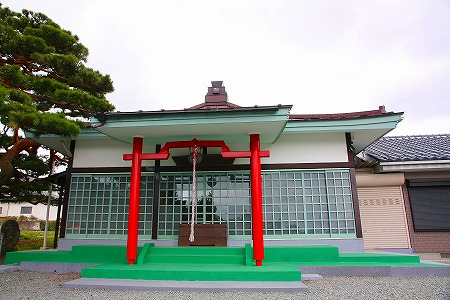
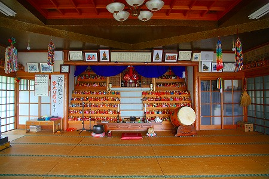
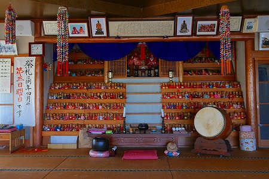
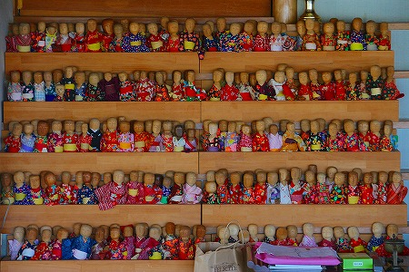
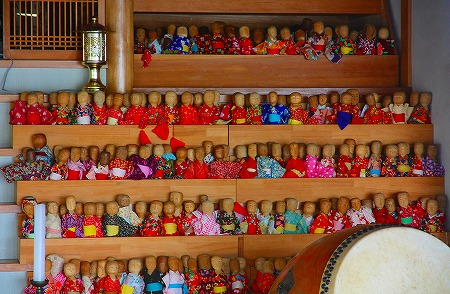
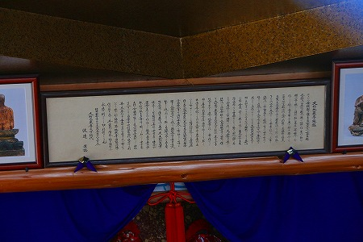
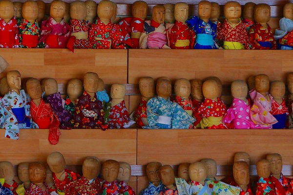
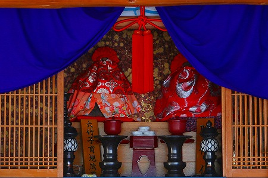
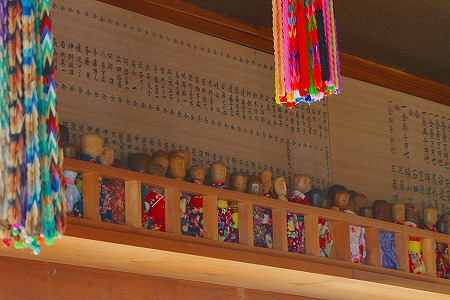
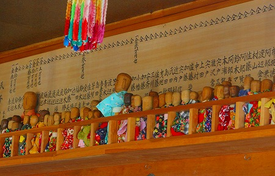

福島市街からこけしで有名な土湯温泉に向かう途中に
大竹地蔵尊という地蔵堂がある。
ここの存在を知ったのは
西田記念館という一大こけしコレクションの展示館に寄った時だった。
そこに見慣れない小さな人形が展示してあったのだ。
そこには大竹地蔵尊の人形とあり、
こけしのルーツであるという説明があった。
むむむ。コレがこけしのルーツなのか…
そもそもこけしとは東北地方の温泉街のみやげ物として江戸末期から売られたもので、あまり信仰とは関係ないと思っていたのだが。
あ、ちなみに「こけし＝子消し＝間引いた子供の供養」という説があるようですが、多分ガセです。
この大竹地蔵尊、展示館の方に所在を伺ったらすぐ近くだという。
それは行かねばなるまい！と、土湯温泉に向かう予定を急遽変更し、大竹地蔵尊へと向かったのである。
地蔵尊はお寺、というわけではなく、ローカルな雰囲気。
ただし、近年塗り替えられ、お堂自体が
ややアグレッシブな色彩なのが面白い。

鍵が掛かっていたので外から中を覗いてみる。

田舎でよく見かける集会所を兼ねたお堂のようなところ。
しかし正面の祭壇の左右が妙にカラフルだ。

おお、雛壇状に
たくさんの人形が並んでいるではないか！
おおおお、わさわさわさわさ。
全部で千体近くはありそうだ。
 
祭壇の上にこの大竹地蔵尊の由来が書かれてあった。

曰く、江戸時代のはじめ頃、鈴木冶右ェ門という武士の息子が病気になった。
いくら医者に見せても治らず一心不乱に仏様にすがったところ、冶右ェ門の夢枕に老人が現れ「荒川に地蔵がいる」との啓示を受ける。
荒川に行ってみると果たして泥に埋まったお地蔵さんがいるではないか。
そのお地蔵さんを綺麗に洗い安置したのがここ、大竹の地。
その後子供はすっかり回復し、近在では子供を守る地蔵サマとして評判になった。
子供が熱を出すとここのお地蔵さんを借りて、治ると返していたのだが、評判が増すにつれて次の人が借りられなくなってしまう。
そこで借りた人は借りたお地蔵サマとは別に一体お返しすることになった。
つまり
返礼倍返しシステムによって人形だらけになってしまったのだとか。
一体一体違う着物を着ているということは
奉納者一人ひとりが手作りで仕立てた着物なのだろう。

由来書からするとこの人形はお地蔵さんということになる。
こけしのルーツはお地蔵さん、ということなのか？
ただ、こけしが信仰にまつわる何かと関連している、という話は聞いたことがない（繰り返すがこけし＝間引いた乳児の供養説は多分ガセですから)。
確かにこけしに似てなくもないが、どちらかというとオシラサマや山の神といった
東北地方に広く伝わるローカルな神像に近いような気がする。
偶々こけしの産地として有名な場所に人形奉納の習俗があったゆえにこけしのルーツとされてしまったのだろうか？
謎は深まるばかりである。
地蔵信仰も、こけしも、その他の信仰も
渾然一体曖昧模糊としているところがある意味東北の民間信仰の醍醐味かもしれない。
中央には2体の本尊らしき像があったが。着物で覆われていて良く見えなかった。
コレが伝説の川で発見されたというお地蔵さんなのだろう。

左右を見上げれば鴨居の上の棚にも人形がビッシリと。
 
4月の大祭には大勢の親子連れが訪れるという。
地域の皆さんに愛されているお地蔵さんっていいですね（棒読み）。